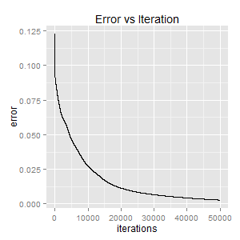

nn
Table of Contents
1 Neural Networks in R
This repository contains code for a simple neural network implemented using R.
First, load the data and functions into R, and any libraries such as ggplot2.
require(ggplot2) source('functions.R') source('display-image.R') images = as.matrix(read.table('zip-images.txt')) labels = read.table('zip-labels.txt') rownames(images) = labels[,1]
The handwritten digits (the inputs) are 14x14 black and white images, which look like:

Each 14x14 images are broken down into a 1x196 vector. Each element in the vector represents the intensity of each value (Ie. 0 = black, 1 = white).
2 Neural Network as a classifer
Neural networks can be used as a classifer. Using this handwritten digit data, I train a neural network to classify the number based on the input (the 14x14 image).
First, I need to create a suitable output matrix. Currently I only have a data frame, "labels", which contains the label for each image. Instead, I need to transform each label into a zero vector of length 10, with the (i+1)th element as 1 if the label is i. This is done with the following function:
CreateLabelVector <- function(label) { label.vector <- rep(0, 10) label.vector[label + 1] <- 1 return(label.vector) } labels.mat <- t(apply(labels, 1, FUN = CreateLabelVector)) colnames(labels.mat) <- paste(0:9) head(labels.mat)
| 0 | 1 | 2 | 3 | 4 | 5 | 6 | 7 | 8 | 9 | |
|---|---|---|---|---|---|---|---|---|---|---|
| 1 | 0 | 1 | 0 | 0 | 0 | 0 | 0 | 0 | 0 | 0 |
| 2 | 0 | 0 | 0 | 0 | 0 | 0 | 0 | 0 | 1 | 0 |
| 3 | 0 | 0 | 0 | 0 | 0 | 1 | 0 | 0 | 0 | 0 |
| 4 | 0 | 1 | 0 | 0 | 0 | 0 | 0 | 0 | 0 | 0 |
| 5 | 0 | 0 | 0 | 0 | 1 | 0 | 0 | 0 | 0 | 0 |
| 6 | 0 | 0 | 0 | 0 | 0 | 0 | 0 | 1 | 0 | 0 |
Next, I divide the original 'images' data into training and test sets.
train.idx <- sample(nrow(images), floor(0.80 * nrow(images))) train.x <- images[train.idx, ] train.y <- labels.mat[train.idx, ] test.x <- images[-train.idx, ] test.y <- labels.mat[-train.idx, ]
Then we can finally start training the neural network. The algorithm optimizes the weights of the neural network by minimizing the log-likelihood with respect to the weight variables via gradient descent. Look in "functions.R" for more details.
nn <- TrainNn(train.y, train.x, c(15, 15, 15), eta = 0.00002, iters = 50000)
The trained neural network has 3 hidden layers, with 15 nodes in each. The error can be plotted:

It doesn't look like the neural network has converged yet. A few more thousand iterations would improve the accuracy, but let's just try and classify the observations in the test set now.
## Get classified values through forward propagation, using the estimated ## weights from the fitted neural network estimated <- ForwardPropagate(test.x, nn$W)$out GetEstimatedLabel <- function(est) { ## Takes estimated classifications and returns digit label which.max(est) - 1 } ## Gets estimated labels from the output of the neural network estimated.digit <- apply(estimated, 1, FUN = GetEstimatedLabel) ## True and predicted labels in same matrix final.classified.vals <- cbind(True = labels[-train.idx, 1], Predicted = estimated.digit) head(final.classified.vals)
| True | Predicted |
|---|---|
| 5 | 5 |
| 4 | 4 |
| 0 | 0 |
| 1 | 1 |
| 9 | 9 |
| 3 | 5 |
Accuracy:
sum(final.classified.vals[, 1] == final.classified.vals[, 2]) / nrow(final.classified.vals)
0.816666666666667